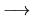

| Deadlock Detection |
In Operating Systems a special resource-allocation graph algorithm can be used to detect whether there is any deadlock in the system. A resource-allocation graph is a directed graph consisting of two different types of nodes P = P1, P2,..., Pn, the set consisting of all active processes in the system, and R = R1, R2,..., Rm, the set consisting of all resource types in the system.
A directed edge from process Pi to resource Rj is denoted by Pi  Rj and means that process Pi requested an instance resource type Rj, and is currently waiting for that resource. A directed edge from resource type Rj to process Pi, is denoted by Rj Pi and means that an instance of resource type Rj has been allocated to process Pi.
The following figure illustrates a resource-allocation graph where processes are denoted by circles and resources by squares. Notice that if there is a circular wait among the processes, then it implies that a deadlock has occurred.
Given a resource allocation graph in which each resource type has exactly one instance, your job is to determine whether there is a deadlock in the system. In case a deadlock exists, you must also show the sequence of processes and resources involved.
We will assume that processes are named by capital letters and resources by small letters, so we limit to 26 the number of processes and/or resources. Therefore, the first line of input consists of three numbers N, M and E, respectively, the number of processes, the number of resources and the number of edges. The edges are given in the following lines as pairs of letters linked by a `-' character. Edges are separated by spaces or newlines.
The output must be `NO' if no deadlock is detected. In case a deadlock is detected, the output must be `YES' followed by the sequence or sequences of circular waits detected, one per line. If more then one sequence is found, they should all be output in increasing order of their length.
1 2 2 4 A-b B-a a-A b-B
YES A-b-B-a-A